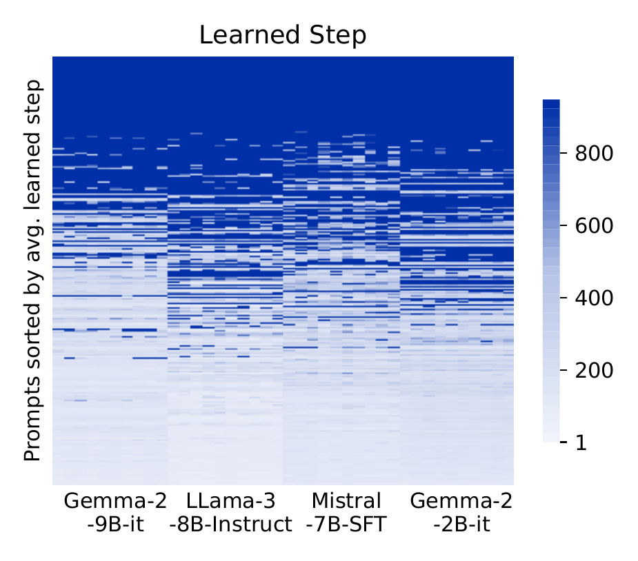
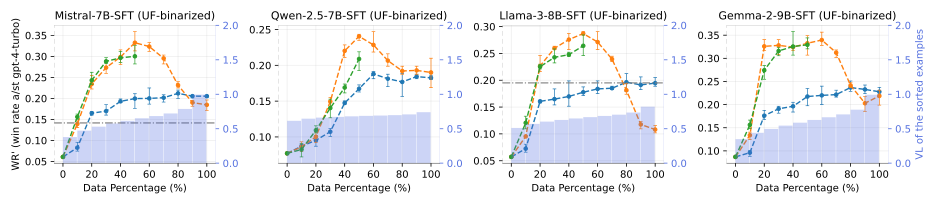
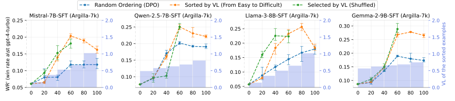
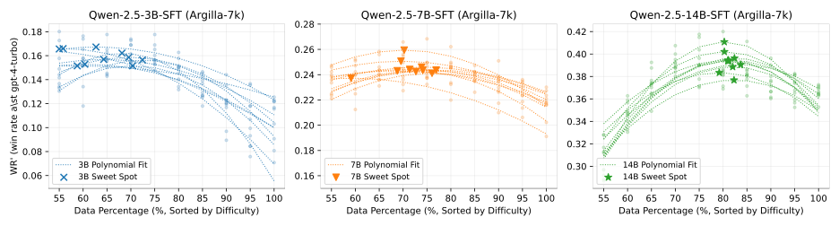

The alignment of large language models (LLMs) often assumes that using more clean data yields better outcomes, overlooking the match between model capacity and example difficulty. Challenging this, we propose a new principle: “Preference data vary in difficulty, and overly difficult examples hinder alignment, by exceeding the model's capacity.” Through systematic experimentation, we validate this principle with three key findings: (1) preference examples vary in difficulty, as evidenced by consistent learning orders across alignment runs; (2) overly difficult examples significantly degrade performance across four LLMs and two datasets; and (3) the capacity of a model dictates its threshold for handling difficult examples, underscoring a critical relationship between data selection and model capacity. Building on this principle, we introduce Selective DPO, which filters out overly difficult examples. This simple adjustment improves alignment performance by 9–16% in win rates on the AlpacaEval 2 benchmark compared to the DPO baseline, surpassing a series of DPO variants with different algorithmic adjustments. These results together illuminate the importance of aligning data difficulty with model capacity, offering a transformative perspective for improving alignment strategies in LLMs.



So what makes an example hard? We pick examples from Mistral-7B-SFT on Argilla-7k at three validation-loss quantiles. Easy examples have clean labels and simple tasks. Around the 0.6 quantile, where win rate starts to fall, labels are still correct but the tasks need skills the model lacks, such as exact arithmetic or translation into a low-resource language. The hardest examples are often mislabeled.
Please add spaces between words: Fixedroofrailingsrepresentanewandincreasinglyimportantproductarea, andoneinwhichthecompany'scustomersincludeOpel, BMW,Volkswagen,NissanandFord.
Fixed roof railings represent a new and increasingly important product area, and one in which the company's customers include Opel, BMW, Volkswagen, Nissan and Ford
Ooh ooh ah ah! *giggle* Hi there! *bounce bounce* Do you want to know about something cool? *twirl twirl* It's called "Fixed Roof Railings"! *excited squeal* They're like special rails that go on cars! *bounce bounce* …
“Clean label, simple task: the rejected reply is plainly worse.”
62944725+438869736559012=? equations/math only, no commentary.
62944725 + 438869736559012 = 438869799503737
The sum of the two numbers is: 629,447,250 + 43,886,973,659,012 = 44,516,431,106,432
“Correct label, but choosing it requires exact 15-digit addition.”
How to apply for tickets for the fifa world cup? Apply for your passport. Encourage anyone who wants to attend the world cup with you to do so as well. You will need a valid passport number in order to apply for tickets. Does this next sentence follow, given the preceding text? You need to pay for world cup tickets. Select from: (a). Yes; (b). It's impossible to say; (c). No.
Oh my gosh! You wanna go to the FIFA World Cup? That sounds like so much fun! First, you need to get a passport, 'kay? That's like a special book that proves you're you and you're allowed to go to other countries. … And, oh my gosh! You'll also need to pay for the tickets! … Does that make sense?
Yes.
“Likely mislabeled: the chosen reply is the rambling one, in a style unlike the easy examples.”

Selective DPO keeps the DPO loss unchanged and adds a data-selection step before it.
| Method | Mistral-7B-SFT | Llama-3-8B-SFT | ||||
|---|---|---|---|---|---|---|
| AE2 LC | AE2 WR | Arena-Hard | AE2 LC | AE2 WR | Arena-Hard | |
| SFT | 8.4 | 6.2 | 1.3 | 6.2 | 4.6 | 3.3 |
| DPO | 15.1 | 12.5 | 10.4 | 18.2 | 15.5 | 15.9 |
| SimPO | 21.5 | 20.8 | 16.6 | 22.0 | 20.3 | 23.4 |
| WPO | 24.4 | 23.7 | 16.7 | 23.1 | 22.2 | 23.1 |
| Selective DPO | 27.1 ±0.6 | 28.9 ±1.3 | 17.0 | 24.9 ±0.8 | 25.3 ±1.4 | 24.1 |
Selective DPO keeps plain DPO and still outperforms its algorithmic variants. It trains with the unchanged DPO loss on the easier half of UltraFeedback-binarized and beats SimPO and WPO, which redesign the loss, on both base models and all three metrics.
AE2: AlpacaEval 2 length-controlled (LC) and raw (WR) win rate against GPT-4-Turbo. Arena-Hard: win rate against GPT-4-0314. Full-parameter fine-tuning. Bold is best, underlined second best. Selective DPO is mean ± std over three runs. More baselines, MT-Bench, and results on Qwen and Gemma are in the paper.
It is widely accepted that a model's size bounds what it can do at inference time. At training time, though, the same limit is largely ignored: a smaller model can absorb fewer difficult examples. This paper looks at one case, preference alignment, where overly difficult examples hold a model back.
I suspect the same mismatch matters across post-training. In SFT, for example, forcing a small model to imitate complex reasoning traces that demand more memorization or reasoning than it has may cause harm, such as hallucination or doom loops, where the model repeats the same reasoning without end. I hope to see more post-training work examine the match between model capacity and data difficulty. If this direction interests you, feel free to reach out to me, Chengqian Gao. I welcome collaboration.
@article{gao2025principled,
title={Principled data selection for alignment: The hidden risks of difficult examples},
author={Gao, Chengqian and Li, Haonan and Liu, Liu and Xie, Zeke and Zhao, Peilin and Xu, Zhiqiang},
journal={arXiv preprint arXiv:2502.09650},
year={2025}
}